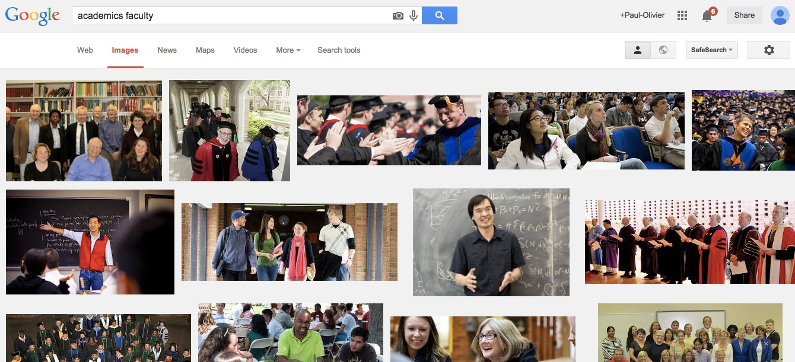

The academic (social) machine (part I)
There was recently a picture circulating on Twitter, like pictures do.

This is, to say the least, a skewed view of academia, although I am certainly not the best placed to say that. I tend to have a beard, use big words, have recently started blogging and did wear robes at some point in my academic career. This is however a good opportunity to show how algorithmic bias works.
First off, where does the bias originate here? As I explained before in my post on social teaching machines, autocompletion surfaces information collected previously. The information in this case is collected in various ways, most notably by looking at previous searches. It is difficult to make broad statements on why people make a Google search. It's an act that always occurs in a certain context, for a ton of different reasons, and Google optimises for an average that is unclear. Who else is making the same search will undoubtedly have an effect on how Google sees the context of a search. Consider the search Why do English people have British humor? and its first answer: Google obviously got the context wrong in my case.

I am a bit at a loss to say more on this, so feel free to comment.
In any case, some of those biases are substantially more serious, of course. For this, you simply have to enter a search of the form "Why do A people B", where A can be any of {asian, white, black} and B any of {look, like smell} to realise that autocomplete is powerful to surface common stereotypes. Not all those autocompletes work though (presumably because the output is too vile and has been hand blocked). So we humans enter our biases, and Google actually amplifies them.
Let's see where this leads.
In the case of autocompletion, the impact is certainly weak, but it might correlate with other biases (or cause them?), underscoring a more ingrained problem. Let's go back to Google's view of academia: what does the output of a Google Image Search of academics faculty return? You can try to use this link, which is user agnostic (but its output will be personalized by Google once you click, unless you use privacy conscious tools). Here is the view I get, when logged in:
Yours should be different: most probably, Terence Tao, the short-sleeved mathematician in the middle row, is further down in yours. This is reasonable, and explained by Christian Sandvig in a beautiful post called Show-and-Tell: Algorithmic Culture: since I am a mathematician, Google gives Tao a bump [1]. And beyond that? Well, Google really thinks that academics wear robes half the time, and perpetuates this bias also visually, not just in autocomplete.
Is this really a serious problem? Well, one consequence is that when humans need to illustrate something (a blog, an educational resource,...) it actually requires effort, judgement to accurately assess the potential bias and not succumb to it. For robes it is of course very easy. For skin color or diversity, as we know, it can be harder and thus requires training and conscious effort. In its outputs, Google is potentially already biased, in ways that are hard to assess for all of us who don't know the Google secret sauce.
Automation is moving rapidly in many areas. Online advertising could easily remove any intermediate human step, refeeding to us our own biases for commercial gain. Services like Sketch2Photo offer the promise of automating the illustration processes, for instance for lecture notes, which would perpetuate this same effect over more vulnerable populations.
| [1] | The fact that Tao is bumped higher than average for me is probably good. It makes the output more relevant to me. If overdone it could also lead to some form of filter bubble. |